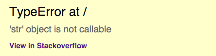

Hello World
CodeTengu Weekly 碼天狗週刊
CodeTengu Weekly 會在 GMT+8 時區的每個禮拜一早上 10:00 出刊，每一期會從目前的 curator 名單中選出三位來負責當期的內容，每一位 curator 各自負責不同的領域，如果你在這一期沒有看到自已感興趣的東西，說不定下一期就會有了。
你也可以瀏覽一下前幾期的內容，有價值的東西是不會過時的。
以下是目前的 curator 陣容：
- @vinta - I failed the Turing Test - 無法通過圖靈測試的程序員
- @saiday - Imnotyourson - 捷運飲食推廣委員會
- @tzangms - Oceanic / 人生海海 - 衝動型購物
- @fukuball - ImFukuball - 機器學習好難
- @wancw
- @adamp33 - 看棒球才是正職，副業是前端工程師
- @kako0507 - 熱愛嘗試新事物的前端工程師
- @chiahsien - Nelson
- @mingderwang
大家也可以 follow 一下 CodeTengu 的 Facebook、Twitter 或 GitHub，有很多 Weekly 看不到的內容。有任何建議或疑問也可以來 Gitter 聊一聊，歡迎亂入 👺
 @vinta
@vinta
Doing Terrible Things To Your Code
這篇文章講的是寫出一支健壯的程式的最好辦法：毫無懸念地，就是「測試」，尤其是針對「邊界值」、「特殊值」的測試。如果你覺得所謂的邊界值就只是 0、-1、9999999999999 或是最大最小值加一減一之類的數值的話，那就太天真了。
大家可以讀讀底下的這幾篇文章，好好地感受一下真實世界的邊界值：
- Falsehoods Programmers Believe About Names
- Falsehoods Programmers Believe About Time
- More Falsehoods Programmers Believe About Time
- Falsehoods Programmers Believe About Geography
- Falsehoods Programmers Believe About Addresses
- Falsehoods Programmers Believe About Gender
P.S. 本文的作者是 Jeff Atwood，就是跟 Joel Spolsky 一起創立 Stack Overflow 的人，是個很幽默的程序員啊～
Kubernetes 架构浅析
最近在研究 Kubeunetes，看到這篇文章把 Kubeunetes 的各個元件解釋得挺清楚的，跟大家分享一下。
不過那個 kube-proxy 的性能問題看起來有點慘吶，雖然好像是聽說這個問題會在 1.1 改善。
 @saiday
@saiday
Design Patterns & Refactoring
這個網站真的不得了，有點像 GoF 的 Design patterns 跟 Martin Fowler 的 Refactoring 這兩本書的集合。 網站設計的很好，一節的內容量不多很適合零散閱讀，且範例充足。 最令人激賞的是他章節的編排，從 Design Patterns 開始講起，接著是 Anti Patterns，再來是 Refactoring，有沒有一種很濃烈的既視感。
如果對這些 Topic 還沒有很有把握的，我想這個網站會是一個很棒的入口吧。對有經驗的人來說，這個網站的資源來當作索引也是再適合不過了。
題外話：有些人在問問題或是在解說自己程式的時候其他人不容易進入他的 context 裡，可能是他還沒有掌握到那些對應的專門詞彙，如果是這樣的話 Design Patterns 的介紹中都有那些常見的詞彙可以趁機多看多感受，當然啦，也有可能是個人的抽象化能力真的太差了。
 @tzangms
@tzangms
創下單月 45TB 流量紀錄的個人專案: MyAudioCast
MyAudioCast 是我在五年前開始的 side project, 雖然今年年初決定收攤了, 不過寫了一篇當初做 Podcast hosting 的紀錄和一些心得, 對於想做個人專案、或是創業的人, 也許可以有一些東西可以參考或是討論。
On code review
可能因為最近太忙, 我其實有點脫離 Code review 這件事, 對我的團隊們實在感到抱歉, 不過也因為感到抱歉, 也一直有在思考 Code review 這件事如何改進, 或是思考因為我的延遲所造成的問題。
對於這篇文章說的事情, 正好寫出的我的一些想法, 也針對了 Reviewer 跟 Submitter 兩方都給了建議, 我覺得應該列進公司內部的 Guideline。
我以下簡單針對兩方列出最重要的一點
給 Reviewer
儘快 Code Review! 否則拖了一天之後就又會一直拖, 特別是對於有拖延症的人, 像是我 (笑), 太晚做 Code Review 有什麼問題? Submitter 會容易忘記先前的內容, 重新進入狀況也會造成 context-switch。
給 Submitter
送出前好好看過自己的 Code, 不管是在 commit 或是開 Pull Request, 後續又持續修改送 commit 上去時, Reviewer 不知道到底是否可以 review 了沒, 可能還得問一聲, 這在我團隊有時也會發生, 所以時間就會拉長, 減少產出。
最後, 對於我的團隊們, 我得致上最高的歉意, 請原諒我最近這麼忙 (哭)
The Phoenix Project
這是我最近在聽的一本書, 應該是我聽過最有趣，也最切身的一本有聲書了, 好聽到不能自己! 非常想推薦給大家, 不習慣聽有聲書的朋友們也可以看看 Kindle 版本, 不過我得說一下, 有聲書實在是生動、有趣多了!
這本書是在說一個在一家大公司的中階的技術主管 Bill, 有一天接到 CEO 秘書打來一聽電話, 要他去見 CEO。 沒想到 CEO 希望他可以接下工程副總的職位, 只是原本職缺的人卻不知道為何突然消失了, 除此之外, Bill 根本不想接, 因為他很滿意他現在的工作, 特別是不知道原本的人是因為被炒魷魚還是自行離職的。 總之太突然, 但是還是被強迫的接下來這個工作。
Bill 接下這個工作後, 就開始一堆狗屁倒灶的事情席捲而來, 故事就由此展開, 什麼系統故障, 安全性問題都一起發生。 不過除了一堆狗屁事情之外, 裡面也持續提到軟體開發、流程、敏捷、架構、部署, 還有目標以及價值 ... 等等, 真心推薦 IT 從業人員, 特別是目前已經在管理階級的人可以讀一下, 搞不好也會有切身體會 XD
總結來說, 這本書就是在說, 很多公司把 IT 就只當作是個部門, 而且是非常獨立的部門來對待, 要做什麼就交代下去, 也不聽取 IT 意見, 不把 IT 當作企業命脈的一部份, 現在哪家具有一定規模的公司不需要 IT 呢?
由於這本書的內容, 實在是跟我現在的狀況太過相像, 所以聽起來特別有感覺, 哈哈哈。
當然, 我避免讓我的團隊們有同樣的感受, 讓他們專注開發、學習新技術。 而我也希望我可以像故事中主角, 最後克服了一堆問題, 克服萬難啊!

Django StackOverflow Trace
這是我最近看到一個對 Django 非常實用的一個套件, 準備來用上 StreetVoice, 我覺得不管是對自己開發或是團隊來說都是很棒的一個工具。
舉例來說, 應該很多 Developer 寫程式碰到錯誤時, 完全沒有一點線索的時候, 可能都會直接複製錯誤訊息、或是 Exception 直接到 Google 搜尋, 而且最常出現的都是 StackOverflow 的結果頁面, 對吧?
這個工具再讓你開發發生錯誤的時候, 直接幫你用錯誤訊息, 直接找 StackOverflow 的搜尋結果給你 XD
我的天啊 ~ 各位! 我們生產力要大增了啊!!!
Python Warehouse - 新世代的 PyPI 上線
有用 Python 的人應該都知道 PyPI, 就在上禮拜, 下一個世代的的 PyPI - Python Warehouse 終於上線了, 新的界面實在是很漂亮啊, 非常的清爽。
根據我先前在的 Pocket 書籤, 似乎是在 4 年前就開始這個計畫了, 雖然翻回去已經找不到了, 不過 Warehouse 也 open source 在 github 上了 , 看了一下是用 Pyramid 作為開發框架。
另外想提一下, 看了下 github 上面的原始碼, 除了 Python 的東西之外, 還有看到 Gulpfile.js, bower.js, package.json, Dockerfile, 還有 Heroku 用的 Procfile, runtime.txt, 想感嘆一聲, 現在的專案真的越來越複雜了啊。
更別說還要弄個 .travis.yml 甚至 coverage 設定, 不過 StreetVoice 網站本身其實也差不多狀態了 ...
 @fukuball
@fukuball
"A Neural Algorithm of Artistic Style" by TensorFlow - TensorFlow 火力展示
最近台北市公佈主燈福祿猴的廬山真面目之後，引起了各界的撻伐，這個美感喪失、極具爭議性的作品卻引起了台灣各界英雄好漢的無限創意，紛紛將自己改編的福祿猴延伸創作貼上了「野生福祿猴」粉絲專頁供大家點評。
其中一個「梵谷星空福祿猴」讓我眼睛一亮，因為這個作品是用機器學習創作的！作者 Mark Chang 使用了 TensorFlow 實作了 A Neural Algorithm of Artistic Style 這篇論文，讓機器可以學習訓練資料的繪畫風格重新創作，就展示圖片看起來效果的確蠻好的～
其實 A Neural Algorithm of Artistic Style 論文發表後，GitHub 上就有不少實作這篇論文的 Repo（我都列在延伸閱讀了），而這個 Repo 的特別之處在於它是使用 TensorFlow 實作的，充分展現了 TensorFlow 的火力，而且還是台灣人寫的，不推不行啊！
延伸閱讀：
 @chiahsien
@chiahsien
A simple tip to reduce App Store rejections
除了幫變數取名字之外，最困擾 iOS 開發者的大概就是送審的 app 常會莫名其妙被退件，而且蘋果的審核又是有名的慢，這樣來回個兩三次，大概一個月就過去了 Orz
這篇文章告訴你如何善用審核資料表單，盡可能的提供足夠的資訊給審核人員，讓他們能在充分理解你的 app 的情況下審核，藉此降低審核人員的疑慮。
Introducing Freddy, an Open-Source Framework for Parsing JSON in Swift
不像在 Objective-C 底下的 JSON parser 只有少數幾個 library 被廣為人知，Swift 的 JSON parser 目前正處於百花爭鳴、群雄割據的階段。The Big Nerd Ranch 的人經過一番研究之後，發現市面上的 JSON parser 都還無法滿足他們的需求，所以他們就自己寫了一個，主要目標有以下三點：
- 盡可能的安全
- 符合 Swift 語言習慣
- 速度快（現在很多 Swift 實作的 JSON parser 速度都不怎麼樣）
有需要的人可以參考看看！
Random Cool Stuff
年会上的程序员们……
這是一個最近在網路上瘋傳的漫畫，出自於中國設計師西乔的作品《神秘的程序员们》，如同她丈夫霍炬所說的，關於程序員管理及工程的書籍汗牛充棟，但關於程序員的漫畫幾乎沒有，也因此他們有了將程序員的日常改編成漫畫的想法。
目前這部漫畫已經連載五年多了吧，隨著這部漫畫的讀者範圍擴大，內容也開始不僅侷限在單純好玩的故事，像是管理問題、常見陷阱、公司困境及一些感情生活等等也都成了漫畫的題材，讓更多和程序員打交道的非程序員也能願意看這部漫畫。也許透過這部漫畫也能讓更多和程序員打交道的人能理解這群既傲慢又謙虛、既開放又封閉、性格滿是缺陷卻又神秘的程序員們吧！
底下附上了《神秘的程序员们》各期漫畫搜集的傳送門，大家前往感受一下吧！
延伸閱讀：
由 @fukuball 分享。